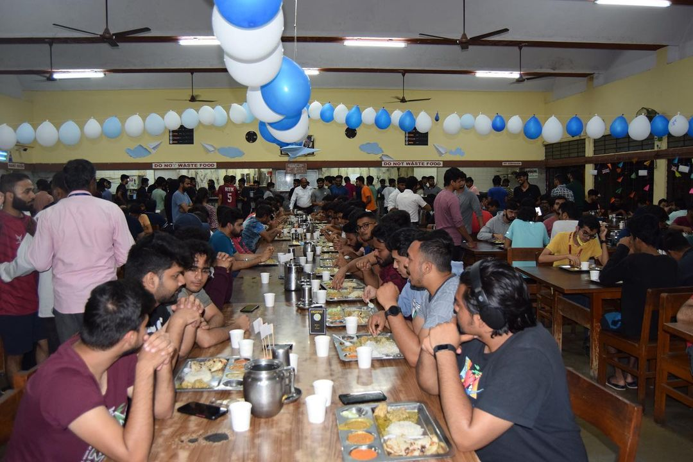
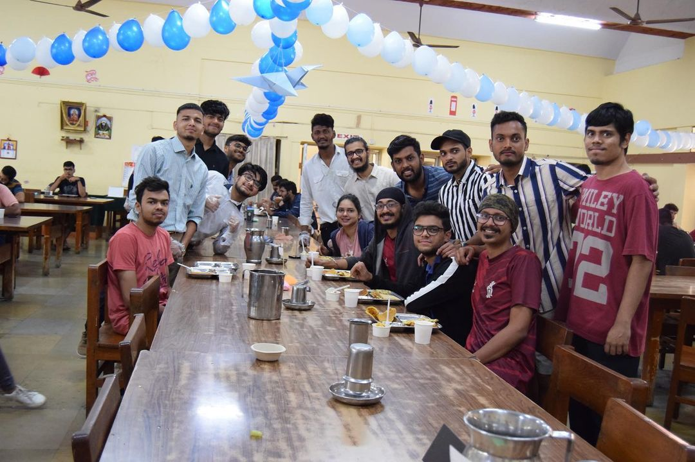

BMSCE MESS
Mess Regulations And Charges
- The hostel requires all its residents to be members of the mess.
- If there is a shortage of accommodation, a limited number of students may be allowed to have mess facility by paying full charges for the academic year and agreeing to join the hostel when accommodation becomes available.
- Students who want to avail of the mess facility must submit a request form and sign the mess joining register.
- The mess timings are fixed, and students must strictly adhere to them. The mess is closed after lunch on every Saturday for maintenance.
- The mess follows a self-service disposable system, and no food will be reserved for latecomers.
- Non-vegetarian food (chicken only) is served as an extra item on specified days. The mess can be managed by a student committee, but financial control rests with the management.
- The menu must be submitted and approved monthly. Students can change from vegetarian to non-vegetarian or vice versa once per semester.
- Mess charges are non-refundable.
- Boarders are not allowed to interfere with mess staff, and the sole aim of the management is to provide a conducive environment for study and stay.
- Management reserves the right to add, alter or delete any rules.
- The mess will remain closed for half a day on Saturdays.
- Stidents who absent themselves on the date of reopening after a semester vacation will be deemed to have joined the mess where they dined during the previous semester and will be charged accordingly.
Mess Timings
- Breakfast: 7:30 am to 9:30 am
- Lunch: 12:30 pm to 2:00 pm
- evening tea/snacks: 4:30 pm to 5:30 pm
- Dinner : 7:30 pm to 9:30 pm

